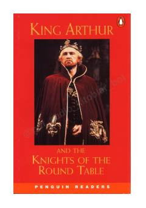

KAQirol Artur va uning jasur ritsarlari haqidagi klassik afsonalarning soddalashtirilgan hikoyasi.
Ushbu kitob qirol Artur va uning yumaloq stol ritsarlari haqidagi mashhur afsonalarning qayta ishlangan soddalashtirilgan versiyasidir. Unda Artur qanday qilib sehrgar Merlin yordamida taxtga o'tirgani, Excalibur qilichi va ritsarlik sarguzashtlari haqida hikoya qilinadi.